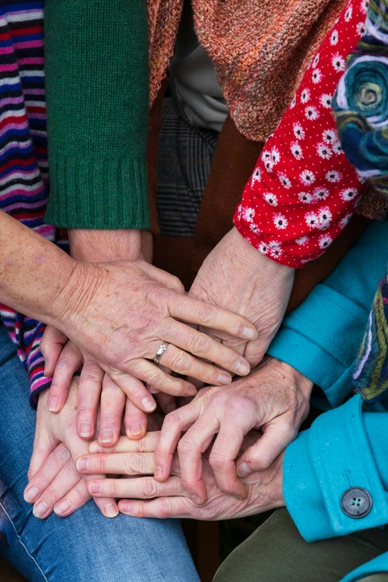

Nossos registros de atividades
Saiba tudo sobre o que fazemos...

Ensino
Temos o incentivo de realizar leituras constantes e trocar experiências com professores dentro da nossa Instituição de Ensino e fora dela. A cada evento proporcionado, existe uma certificação que nos permite ampliar nosso currículo e expertise.

Pesquisa
Contamos com profissionais que nos incentivam a divulgar informações científicas para a comunidade idosa, e, assim contribuir para a criação de estratégias para amelhoria da saúde e bem-estar nessa faixa etária.

Extensão
Através de nossas ações, nos aproximamos da população idosa, promovendo mais qualidade de vida e conhecimento